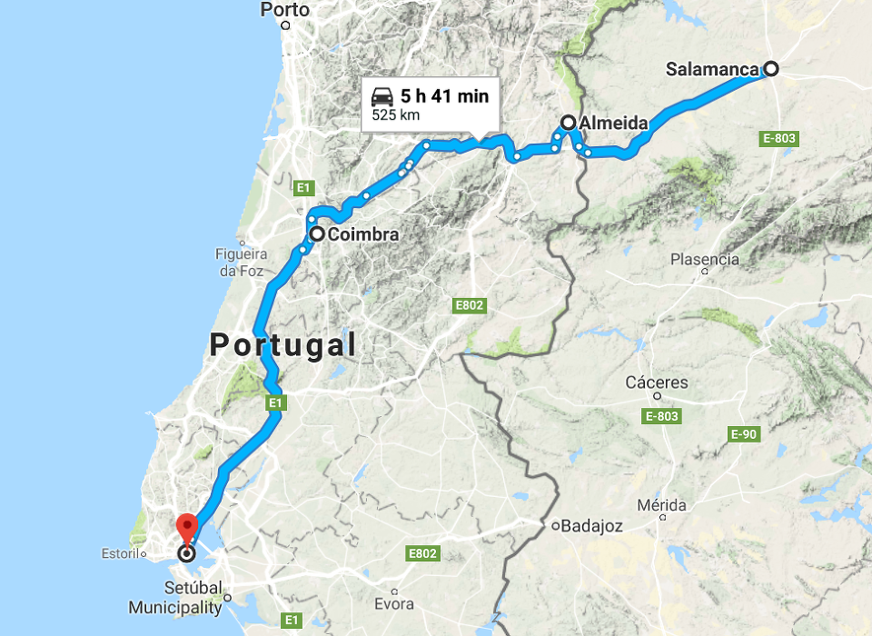
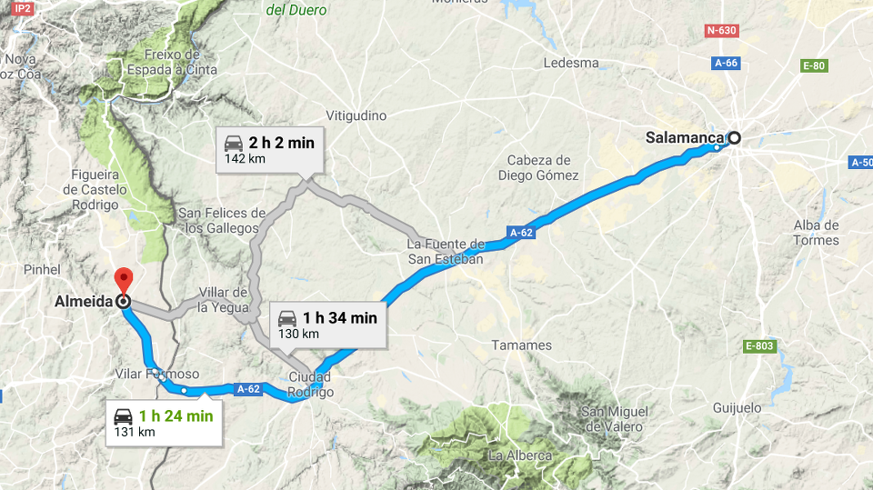
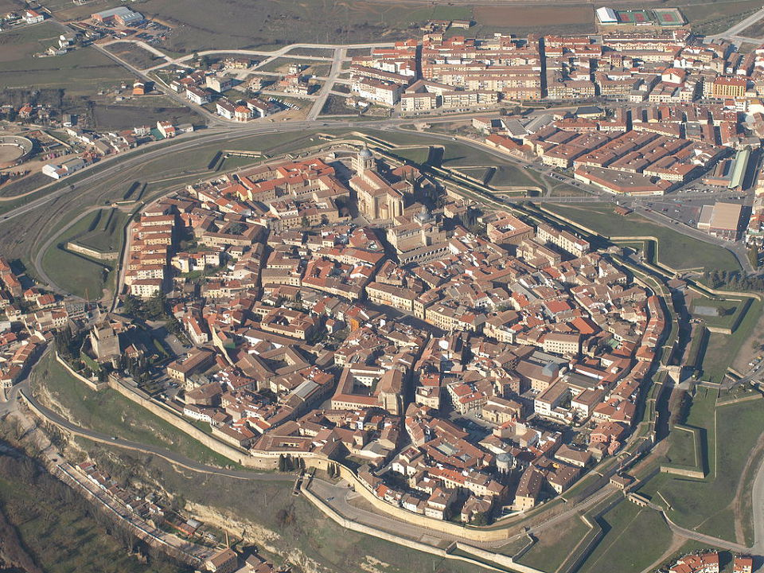
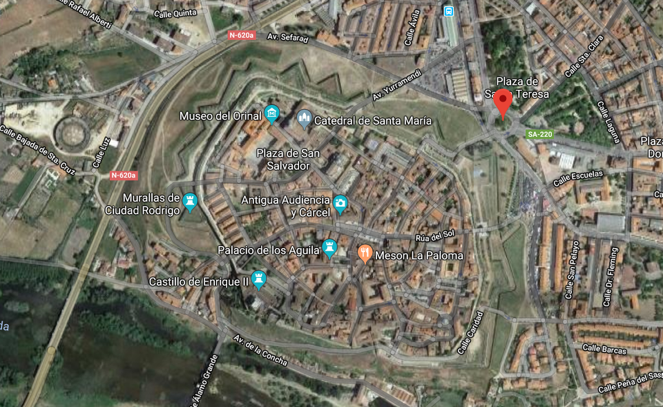
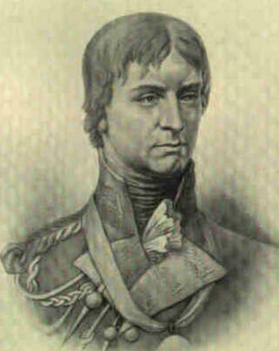
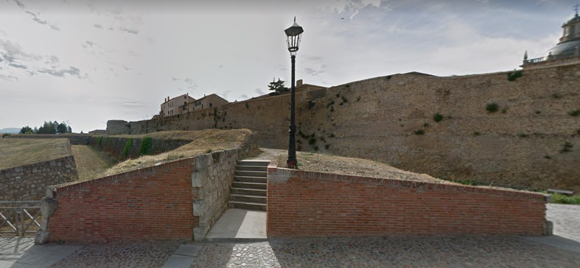
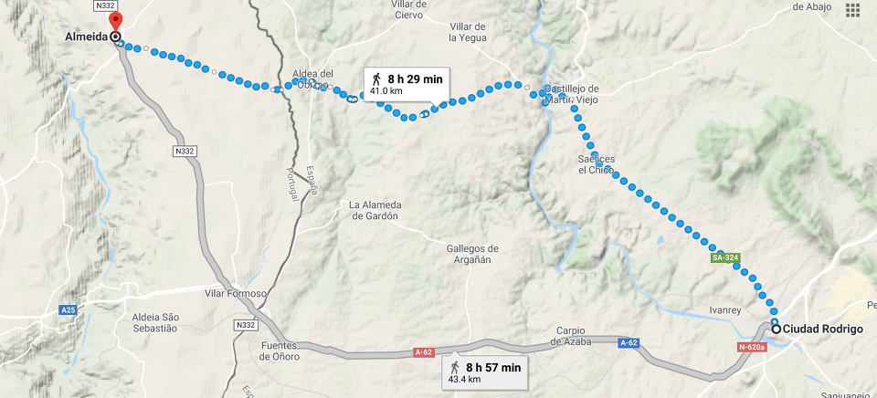

두 요새 (1) - 시우다드 로드리고(Ciudad Rodrigo) 공방전
게시: 2018-10-15T06:30:00+09:00
마세나는 나폴레옹으로부터 포르투갈 침공의 명령을 받자, 제대로 된 지휘관답게 지도부터 펼쳤습니다. 원래 포르투갈이 스페인으로부터 독립을 유지할 수 있었던 이유 중 하나가 스페인으로부터 포르투갈로 진입하기 위한 교통로가 험준한 국경 지형으로 인해 제약되어 있었다는 점이었지요. 기억들하시겠습니다만, 탈라베라(Talavera) 전투 이후 웰링턴이 술트의 측면 기습을 피해 재빨리 포르투갈로 퇴각한 경로가 대표적인 포르투갈로의 진입로였습니다. 그 경로는 아래 지도와 같이, 살라망카에서 알메이다(Almeida)와 쿠임브라(Coimbra)를 차례로 거친 뒤 리스본으로 향하는 길이었지요.

(프랑스-독일에 비하면 스페인-포르투갈은 험준한 산맥이 꽤 많은 편이고, 군대가 대포를 끌고 이동할 수 있는 경로는 꽤 제한적이었습니다.)

(시우다드 로드리고는 저 남쪽의 바다호스(Badajoz)와 함께 포르투갈-스페인 사이의 교통로를 지키는 스페인 측의 양대 관문입니다.)
마세나는 정공법대로 나가기로 했습니다. 포르투갈 침공의 첫 관문은 알메이다(Almeida) 요새가 될 것인데, 그를 위해서는 인근 스페인 국경 내에 있는 시우다드 로드리고(Ciudad Rodrigo)를 쳐야 했습니다. 스페인의 침공에 대비한 포르투갈의 관문이 알메이다 요새라면, 반대로 포르투갈의 침공에 대비한 스페인측 관문이 바로 시우다드 로드리고였거든요. 이 도시는 아직 스페인군 손아귀에 있었습니다. 스페인에서 포르투갈로 침공하든 반대로 포르투갈에서 스페인으로 침공하든 하나의 관문을 넘어야 하는 법인데, 마세나의 경우는 두 개의 인접한 관문을 한꺼번에 넘어야 했던 것이지요.
시우다드 로드리고는 비교적 작지만 별 모양으로 축성된 견고한 근대식 요새도시였습니다. 모든 요새는 함락시키기 어려웠지만, 특히 기동성을 중시하는 프랑스군에게는 공성전이 익숙하지도 않았고 즐겨하지도 않았지요. 공성전에 필요한 많은 중포와 탄약, 포탄 등을 수송하는 것도 어려웠고 장기간 대규모 병력이 한 지역에 묶여있어야 하니 식량 조달도 쉽지 않았기 때문이었습니다. 그러나 마세나는 꼼수를 부릴 생각하지 않고 그 어려운 도전에 정석으로 돌입합니다. 마세나군의 선봉에 선 것은 네(Michel Ney) 원수였습니다.

(현대의 시우다드 로드리고 요새입니다. 이 요새의 남서쪽은 아구에다(Agueda) 강에 접하고 있습니다.)

(현재는 시우다드 로드리고 북서쪽에 훨씬 더 넓은 신시가지가 펼쳐져 있습니다. 구글맵의 거리 풍경을 통해 현지의 골목골목을 생생하게 볼 수 있습니다. 정보화 세상은 탈도 많지만 확실히 이로운 면이 더 많습니다.)
네 원수는 자신의 제6군단 전체 뿐만 아니라 다른 3개 보병 사단과 2개 기병 연대를 더해 총 4만2천의 대군과 60문의 대포를 이끌고 4월 26일 시우다드 로드리고 앞에 나타났습니다. 시우다드 로드리고를 지키고 있던 것은 에라스티(Don Andrés Perez de Herrasti) 장군이 이끄는 스페인군 5천5백이었습니다. 프랑스군의 병력이 워낙 압도적이었으므로 승산이 없었고 요새 함락은 오로지 시간 문제였으나, 에라스티 장군은 프랑스군의 비교적 관대한 조건의 항복 권유를 거부했습니다. 이유는 나폴레옹이 의심하던 대로 믿는 구석, 즉 영국군의 지원이 약속되어 있었기 때문이었습니다.
바로 전에, 웰링턴은 늘 그렇듯이 스페인 게릴라들이 프랑스 연락장교들을 죽이고 탈취해온 문서들 중에서 술트가 조제프에게 보낸 편지를 발견했습니다. 그 편지를 보고 프랑스군이 곧 시우다드 로드리고를 들이칠 것이라는 것을 안 웰링턴은 서둘러 병력을 알메이다 쪽으로 전개했고, 특히 크로퍼드(Robert Craufurd) 장군의 경보병 사단 5천을 시우다드 로드리고 인근으로 보내 지원을 약속했습니다. 그러나 막상 4월 말이 되어 실제로 몰려온 프랑스군을 보니, 도저히 크로퍼드의 경보병 사단 하나 가지고 뭘 어떻게 해볼 상황이 아니었습니다. 프랑스군의 규모를 알게 된 웰링턴은 그들과 전면전을 벌이는 것은 도저히 승산이 없다고 보고, 전형적인 영국인다운 얌체같은 결정을 합니다. 즉, 약속은 깨라고 있는 것이고 자신들이 지킬 영역은 포르투갈이지 스페인이 아니므로 시우다드 로드리고는 스페인군에게 맡긴다는 것이었지요. 그런 지시를 받은 크로퍼드의 경보병 사단은 이후 네의 프랑스군과 접촉만 계속 유지할 뿐 적극적으로 싸움을 걸지 않았습니다.

(그 험악하고 엄한 성격 때문에 부하들로부터 검은 밥(Black Bob)으로 불리던 크로퍼드 장군입니다. 오만한 성격이었던 웰링턴은 부하들에게 지시를 내릴 때 결코 왜 그런 명령을 내리는지 설명하는 법이 없었는데, 오직 베레스포드와 힐, 그리고 이 크로퍼드 장군에게만 자세한 설명을 했다고 합니다. 그만큼 존중하고 신뢰하는 부하였던 것이지요. 웰링턴은 특히 크로퍼드 장군에게는 어떤 주제에 대해서건 항상 조언을 구한다고까지 말했습니다. 그런 크로퍼드는 이렇게 주변만 맴돌아야 했던 시우다드 로드리고 요새를 2년 후인 1812년 프랑스군의 손에서 빼앗기 위해 포위 공격하던 중 전사하고 말았습니다.)

(시우다드 로드리고 성벽 바로 바깥에 있는 해자와 방어물 일부입니다. 굉장히 튼튼해 보이지요 ?)
영국군의 지원을 믿고 있던 에라스티의 스페인군은 졸지에 고립무원의 신세가 되었습니다. 그러나 워낙 성이 튼튼하고 비축해놓은 보급품이 충분했으므로 스페인군은 프랑스군의 가열찬 포격에도 잘 버틸 수 있었습니다. 그러나 결국 집중 공격에 떨어지지 않는 요새는 없는 법입니다. 무려 10주간에 걸친 프랑스군은 별 모양의 보방(Vauban)식 성곽을 공격하는 교과서적인 것이었습니다. 지그재그로 참호를 파서 가까운 거리까지 접근로를 만든 뒤, 참호와 토벽으로 보호된 포대를 구축하여 포격을 가하는 것이었지요. 이런 집중 포격에 마침내 성벽 일부가 무너지고 보병들이 돌격 가능한 구멍(이를 전문 용어로 practical breach라고 합니다)이 뚫리자, 더 저항하는 것은 무리였습니다. 에라스티 장군은 그 무너진 성벽 아래에 직접 나가, 역시 직접 나온 네 원수를 만나 협상을 했습니다. 그 결과로 맺은 항복 조건은 10주 전의 조건보다는 나빴지만, 여전히 괜찮은 편이었습니다. 즉, 시우다드 로드리고 시민들의 집과 재산에 대한 약탈은 일체 금지되지만, 수비에 참여했던 군인들과 일종의 자치 정부라고 할 수 있는 명사회(junta, 훈타) 소속의 관료들은 전쟁 포로로서 프랑스로 압송된다는 것이었습니다.
10주 간에 걸친 시우다드 로드리고 요새 공방전이 마침내 7월 10일 종료되었을 때 스페인군의 인명 피해는 461명 전사에 994명 부상, 그리고 포로 4천이었습니다. 프랑스군은 180명 전사에 1천여 명의 부상자를 냈지요. 결코 작은 숫자가 아니었습니다. 길고 지루한데다 사상자도 많았던 이 요새 공방전에 짜증이 나있던 프랑스군은 네 원수의 제지에도 불구하고 시우다드 로드리고 시내에 들어가자마자 약탈을 벌여 스페인 시민들을 경악시켰습니다.
네 원수도 난감한 것은 마찬가지였습니다. 명예를 알던 군인인 네는 약탈을 하지 않겠다는 약속을 지키지 못한 것도 부끄러웠지만, 이 요새 하나를 빼앗는데 무려 10주간이나 걸렸다는 것도 당혹스러운 일이었습니다. 상대적으로 쉬운 상대였던 스페인군이 지키던 요새 하나 빼앗는데도 10주가 걸렸다면, 윌리엄 콕스(Willian Cox) 장군의 영국군이 만반의 준비를 해놓고 지키고 있을 포르투갈 알메이다 요새를 빼앗는데는 얼마나 걸릴지 눈 앞이 캄캄했던 것입니다. 게다가 시우다드 로드리고 포위전 내내 주변을 알짱거리며 신경을 거스르던 크로퍼드의 영국군 경보병 사단이 알메이다에서는 본격적으로 네의 제6 군단을 괴롭힐테니, 알메이다 요새 포위에 앞서 먼저 영국군 경보병 사단부터 요절을 내놔야 했습니다. 병력 차이가 워낙 컸으니 결국 요절을 내기는 하겠지만 시간이 문제였지요.
그러나 전쟁에서는 별의별 일이 다 일어나는 법입니다. 상황은 네와 크로퍼드, 콕스 어느 누구도 예상하지 못했던 방향으로 전개되었습니다.

(시우다드 로드리고로부터 알메이다 요새는 걸어서 하루 거리였습니다.)
Source : The Life of Napoleon Bonaparte by William M. Sloane
https://en.wikipedia.org/wiki/Siege_of_Ciudad_Rodrigo_(1810)
https://en.wikipedia.org/wiki/Robert_Craufurd